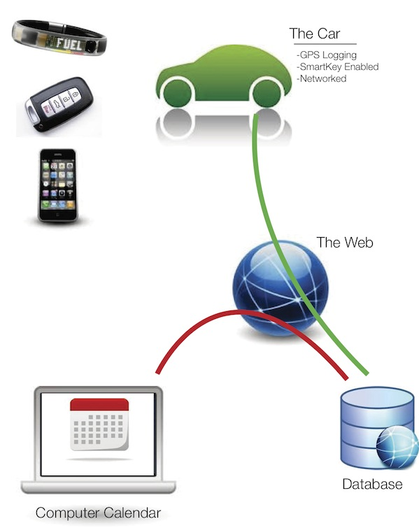

Smartphone App
The design comprises of a smartphone application and a identifier device that would be present in the car. The identifying device would enable users to register themselves to use the car and later would also help in authenticating the user to use the car. It would act as a mere entry point to use the car. The application would enable five users to effectively share the car and so once, the user connects his/her smartphone to the device it would check to see if there is any vacant spot present. The application spots a vacant user spot and the connected user is assigned that spot. The application is activated only if there is more than one user linked to the car.
Now once all the users have connected their respective smartphones to the car they could use the application to reserve the car, share rides or just view information related to the usage and schedules. Whenever a user would reserve the car a notification would be sent to all the other users who would have to approve the 'request to reserve the car'. This notification would however, expire within a certain period of time. If all the other users give permit or if the 'period to approve reservation of the car' expires the current user could reserve the car. The user would enter all the specifics needed to reserve the car and this would then get added to the schedule. All other users would be able to view this information and could select to share the ride with the current user. This request to share the ride would then have to be approved by the user who reserved the car. If the user (who reserved the car) approves the request the user gets added and the application would keep a track of their use of the car.
The application aims to helps users reserve the car in advance, share rides, view the schedule, view current state of car and display users' usage details.


Wheelman
We were thinking about ways of encouraging literal carpooling with in the car-share group. One way to do this is to have a tablet on the fridge, by the back door, or on the kitchen table. We thought that it might become something people check periodically, either when scheduling their own trip or simply to know what other members of the group are up to. This was designed to spark conversation about the usage of the car, and how trips could be merged. We originally decided that the system would need to include some way of identifying users, and (as mentioned earlier) we thought that a wristband would be a good idea because it captures some of the sense of a watch and a livestrong bracelet, and allow for certain natural motions to be interpreted as system input. This was an outgrowth of earlier ideas involving a smart kiosk and novel keychain tokens; we decided that the use of a keychain token would make this idea too similar to Key+, at least at face value. Another driving factor was the desire to make ownership and interaction with the car fun- as such, Wheelman was designed to support novel ways of physically interacting with the touch interface, other users, and the car. This attitude is reflected in early design documents.


Key+
The device took the form of a tangible Key attachment. It had several modes showing measured distances, a timer counting down to when it had to be returned, a meter that gauged fuel.
As we merged the in-car system and keychain RFID into Key+, we created a provision for the users to know the availability (present state of car).
We simplified the ideas from the Initial Sketch of the Key+ Modes to include only two core functions:
- Timer till scheduled trip ends.
- LED Indicators for car availability.

Assumptions to Guide our Design
For each of our designs, we assume there is a backend database containing all the information about our users, their scheduled plans for the car, and data about the actual use of the car. We also assume there is some way to reliably control access to the car and record data about the different trips that users make with the car.
The database will handle the authentication of user identities when they interact with the system, controlling what records are visible. Our system needs to know which user is doing what. It needs to provide a central calendar describing the planned usage over time for the car and it needs to somehow maintain a log of car activity. There has to be some feature of our system that ensures that users can only take the car for themselves when permitted by the calendar.
We need to have a system built into the car for access control. One possible way to implement this is a realistic possibility for modern vehicles with radio control keys. Many new cars do not require the driver to insert a physical key, only to have a special wireless key in the vicinity of the car. At least 28 car manufacturers have some variety of proximity sensing keys, many with discrete buttons for door locks, while Toyota and others will automatically unlock doors and enable ignition by simply having the key in a pocket or handbag. An additional layer of lock and ignition control could be added to the car's electronic access system based on our calendar system.
For any trip, by each user, the car must also have some way to track the location, the route distances, the trip time, and (if possible) the fuel or power consumption of the car. In older cars, it may be possible to hack together a combination of GPS and a timer to gather data about the distances travelled and the time of possession for each user. In addition, there could be a small computer attached to the car emission control system in order to measure and calculate the fuel consumption or driving patterns.
An ODB-II port is a common feature built into the underside of the dashboard in many cars. Some driving enthusiasts have developed custom interfaces for this data port, and they use special control systems to adjust the engine performance settings. Many current model vehicles include Bluetooth connectivity for smart phone integration into the stereo system for streaming audio and telephone calls over the car speakers. For the purposes of our designs, we assume that similar communication protocols could be used to record geographic trip data, elapsed time, and the car's energy consumption measurements and then relay this to our database.
Each of our designs interacts with this backend system in different ways.